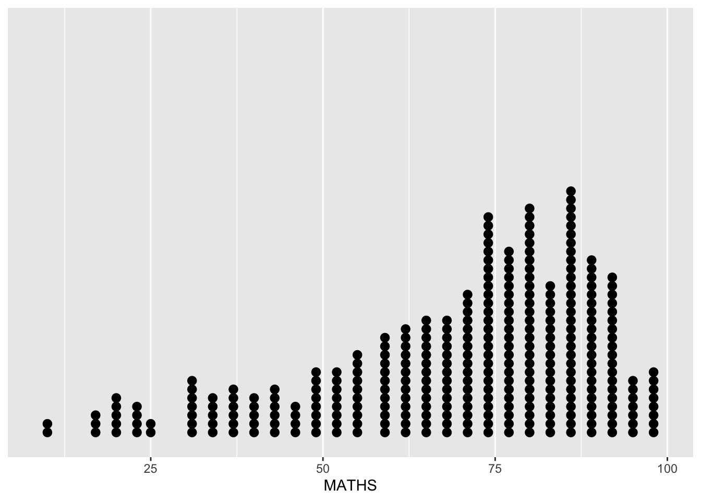
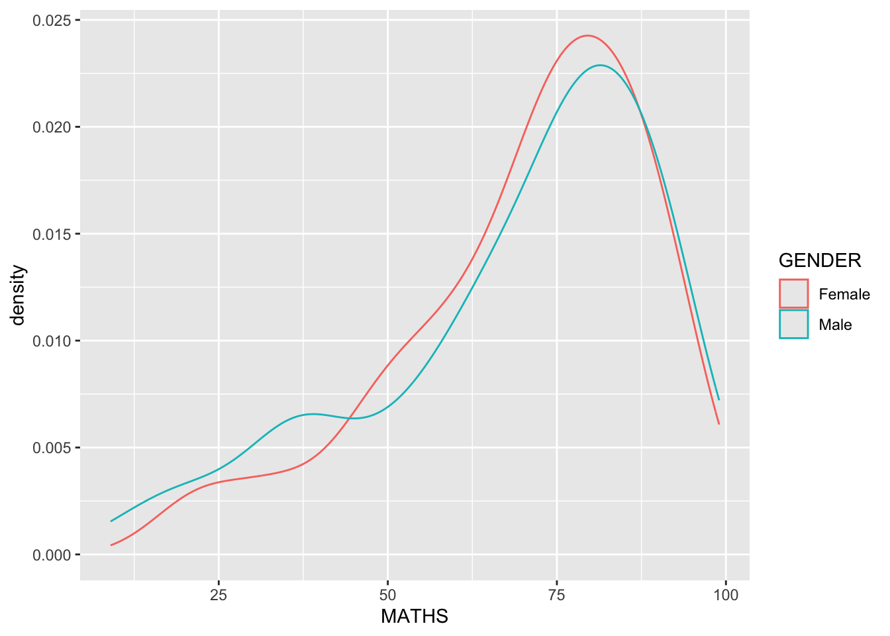
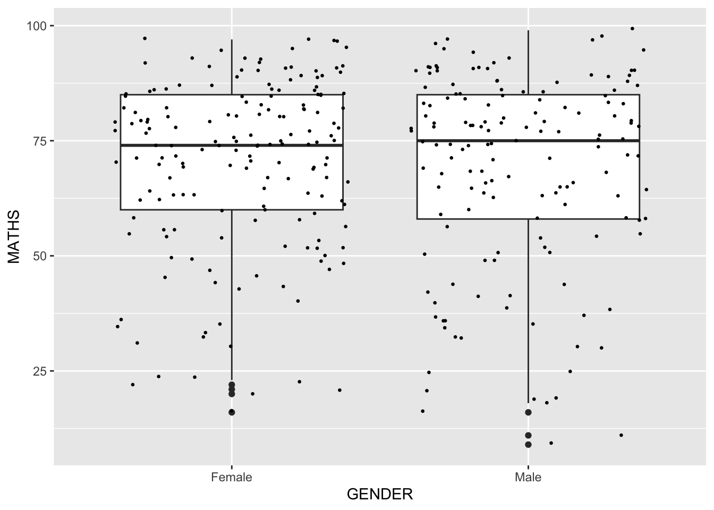
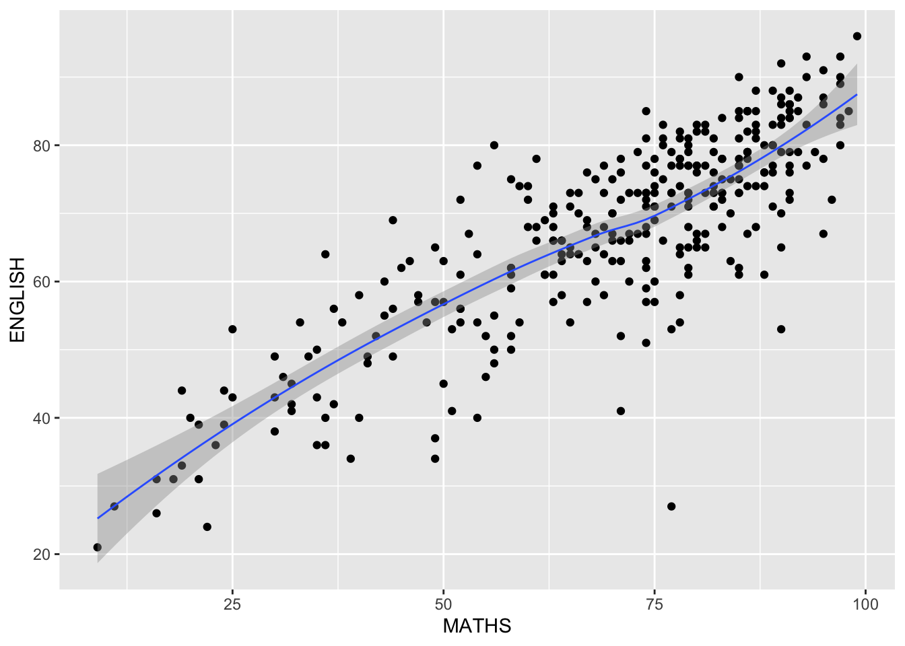
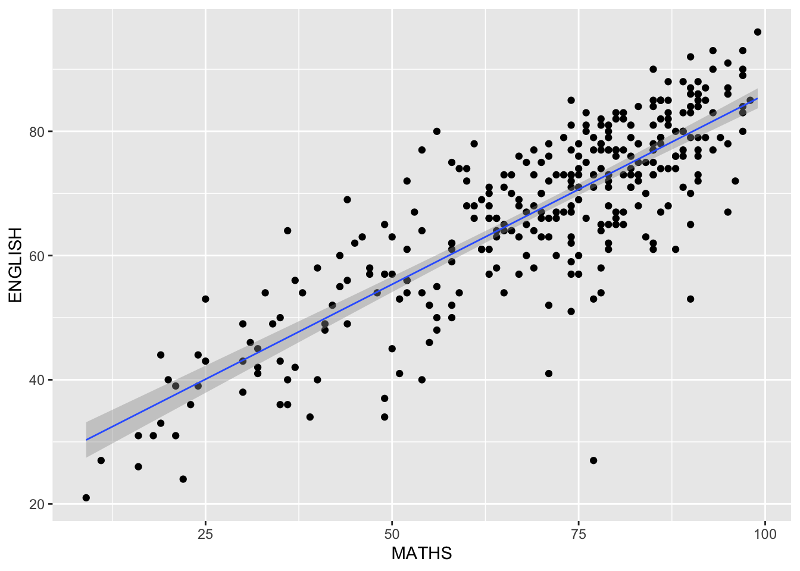

pacman::p_load(tidyverse)
exam_data <- read_csv("../data/Exam_data.csv")Week 01 - A Layered Grammar of Graphics: ggplot2 methods
1.1 Introduction
The following content is created by following the tutorial on this chapter.
1.1.1 Comparison of R Graphics VS ggplot
hist(exam_data$MATHS, xlab="Math Score", main="Distribution of Math Scores")# ggplot(data=df) will just display an empty canvas.
# setting aes(x=MATHS) just sets the x-axis to the range of values in the MATHS column
# using geom_histogram
ggplot(data=exam_data, aes(x = MATHS)) +
geom_histogram(bins=10,
boundary=100,
color="black",
fill="grey") +
ggtitle("Distribution of Math Scores")1.2 Geometric Objects in ggplot2: geom
1.2.1 Bar chart with geom_bar()
ggplot(data=exam_data,
aes(x=RACE)) +
geom_bar()
1.2.2 Dot plot with geom_dotplot()
Not be confused with scatterplots, a dot plot is essentially a histogram but in the style of stacked dots.
ggplot(data=exam_data,
aes(x=MATHS)) +
geom_dotplot(dotsize=0.5)
Because the y-axis scale is misleading, we will have to turn off y-axis with the scale_y_continuous()
ggplot(data=exam_data,
aes(x=MATHS)) +
geom_dotplot(binwidth=2.5,
dotsize=0.5) +
scale_y_continuous(NULL, breaks=NULL)
Question: When is a dot plot preferred over something like a histogram? Is counting the dots even feasible?
1.2.3 Histograms with geom_histogram()
# default number of bins is 30
ggplot(data=exam_data,
aes(x=MATHS)) +
geom_histogram()
In the geom(), we can use the arguments to modify the geometric object.
ggplot(data=exam_data,
aes(x=MATHS)) +
geom_histogram(bins=20,
color="black",
fill="light blue")
Similar to hue in seaborn, we can colour the histogram by sub-groups using the fill argument in aesthetic(). We can also play around with the other arguments like alpha and color.
ggplot(data=exam_data,
aes(x=MATHS,
fill=GENDER)) +
geom_histogram(bins=20,
color="grey30")
# Can't use it on continuous variables either even though there's the warning.
# It's very difficult to see.
ggplot(data=exam_data,
aes(x=MATHS,
alpha=CLASS)) +
geom_histogram(bins=20,
color="grey30")The color argument in the geom_histogram() needs to be removed as it will override the previous aes()
ggplot(data=exam_data,
aes(x=MATHS,
color=GENDER)) +
geom_histogram(bins=20,
alpha=0.3)1.2.4 Kernel Density Estimate with geom_density()
ggplot(data=exam_data,
aes(x=MATHS)) +
geom_density()
ggplot(data=exam_data,
aes(x=MATHS,
color=GENDER)) +
geom_density()
1.2.5 Boxplot with geom_boxplot()
ggplot(data=exam_data,
aes(y=MATHS,
x=GENDER)) +
geom_boxplot()
# notches are used to see if medians of the distributions differ
ggplot(data=exam_data,
aes(y=MATHS,
x=GENDER)) +
geom_boxplot(notches=TRUE) # TRUE must be all caps
1.2.6 Violin plot with geom_violin()
This is for comparing multiple data distributions side by side. With density curves, as the lines may overlap with one another, it is more challenging to compare the different distributions.
ggplot(data=exam_data,
aes(y=MATHS,
x= GENDER)) +
geom_violin()
1.2.7 Scatterplot with geom_point()
ggplot(data=exam_data,
aes(x=MATHS,
y=ENGLISH)) +
geom_point()
1.2.8 Combining geom objects
ggplot(data=exam_data,
aes(y=MATHS,
x=GENDER)) +
geom_boxplot() +
geom_point(position="jitter",
size=0.5)
1.3 Statistics functions in ggplot2: stat
1.3.1 Using the stat_summary() method
The box plot above doesn’t indicate the position of the means. By working with the stat_summary() function, we can indicate the mean values on the plot.
ggplot(data=exam_data,
aes(y=MATHS,
x=GENDER)) +
geom_boxplot() +
stat_summary(geom="point",
fun="mean",
colour="red",
size=4)
1.3.2 Using geom() to update stat
Overriding the default stat, we can add the mean values as well.
ggplot(data=exam_data,
aes(y=MATHS,
x=GENDER)) +
geom_boxplot() +
geom_point(stat="summary",
fun="mean",
colour="red",
size=4)
1.3.3 Using geom_smooth() to add best fit curve
ggplot(data=exam_data,
aes(x=MATHS,
y=ENGLISH)) +
geom_point() +
geom_smooth(linewidth=0.5)
ggplot(data=exam_data,
aes(x=MATHS,
y=ENGLISH)) +
geom_point() +
geom_smooth(method=lm,
linewidth=0.5)
1.4 Facets
Also known as trellis plot. In mpl it’s subplots.
1.4.1 Wrapping 1d sequence of panels into 2d with facet_wrap()
ggplot(data=exam_data,
aes(x=MATHS)) +
geom_histogram(bins=20) +
facet_wrap(~ CLASS)
1.4.2 Creating matrix of panels with facet_grid()
# This should be similar to subplots
ggplot(data=exam_data,
aes(x=MATHS)) +
geom_histogram(bins=20) +
facet_grid(~ CLASS)
1.5 Coordinates
1.5.1 Flipping the coordinates with coord_flip()
ggplot(data=exam_data,
aes(x=RACE)) +
geom_bar() +
coord_flip()
1.5.2 Changing the y- and x-axis range with coord_cartesian()
ggplot(data=exam_data,
aes(x=MATHS,
y=ENGLISH)) +
geom_point() +
geom_smooth(method=lm,
size=0.5) +
coord_cartesian(xlim=c(0,100),
ylim=c(0,100))
1.6 Themes
- List of built-in themes
1.6.1 Examples of different themes
ggplot(data=exam_data,
aes(x=RACE)) +
geom_bar() +
coord_flip() +
theme_gray()
ggplot(data=exam_data,
aes(x=RACE)) +
geom_bar() +
coord_flip() +
theme_classic()
ggplot(data=exam_data,
aes(x=RACE)) +
geom_bar() +
coord_flip() +
theme_minimal()
1.7 Additional Plots
This space is for more exploration regarding this week’s extra topics. It may be done later when I have time to revise.
1.7.1 Age-sex Pyramid
Data Retrieved From Singstat
Show the code
# Referenced from https://www.geeksforgeeks.org/how-to-create-a-population-pyramid-in-r/
pop_data <- read_csv("../data/sg_residents_jun2024.csv")
# This is to ensure that the age levels are sorted correctly
age_levels <- pop_data %>%
distinct(age) %>%
pull(age) %>%
str_replace(" Years", "")
pop_data <- pop_data %>%
mutate(age = factor(str_replace(age, " Years", ""), levels = age_levels))
# Plotting the age-sex pyramid
pop_data %>%mutate(
population = ifelse(gender=="M", population*(-1e-3),
population*1e-3))%>%
ggplot(aes(x = age,
y = population,
fill = gender)) +
geom_bar(stat = "identity") +
coord_flip() +
scale_y_continuous(limits = c(-200,200),
breaks = seq(-200, 200, by = 50))+
labs(title = "Singapore Residents", x = "Age Range",
y = "Population (in thousands)") +
theme_light() +
theme(axis.ticks.y=element_blank())1.7.2 Pareto Chart
Data Retrieved From Singstat
Show the code
pacman::p_load(scales)
exp_data <- read_csv("../data/avg_monthly_expenditure2023.csv")
pareto_data <- exp_data %>%
mutate (
category_wrapped = str_wrap(category, width = 8)
) %>%
arrange(desc(avg_spend)) %>% # Sort by avg_spend in descending order
mutate(
category_wrapped = factor(category_wrapped, levels = category_wrapped), # Fix category order
cum_percent = cumsum(avg_spend) / sum(avg_spend) * 100) # Calculate cumulative percentage
# Create the Pareto chart
ggplot(pareto_data, aes(x = category_wrapped)) +
geom_bar(aes(y = avg_spend), stat = "identity", fill = "steelblue") +
geom_line(aes(y = cum_percent * max(avg_spend) / 100,
group = 1), color = "red",
size = 1) +
geom_point(aes(y = cum_percent * max(avg_spend) / 100),
color = "red", size = 2) +
scale_y_continuous(
name = "Average Monthly HouseHold Expenditure (SGD)",
sec.axis = sec_axis(~ . * 100 / max(pareto_data$avg_spend),
breaks = seq(0, 100, by = 20),
labels = percent_format(scale = 1))) +
labs(
title = "Average Monthly Household Expenditure by Goods and Services Type (2023)",
x = "Type of Goods and Services",
y = "Average Monthly HouseHold Expenditure (SGD)"
) +
theme_minimal() +
theme(axis.text.x = element_text(size = 6)) This Pareto chart shows the average monthly household expenditure in Singapore for 2023, offering insights into spending priorities. Key areas like “Housing and Utilities,” “Food and Food Serving Services,” and “Transport” form the bulk of household expenses. However, it’s worth noting that the data is self-reported, as outlined in the Household Expenditure Survey 2022/23 (SingStat). Additionally, this analysis isn’t normalized by household size or segmented by income levels, which could mask inequalities across different demographics.
For a deeper dive, the full report and related publications are available on SingStat’s website (here). This serves as a starting point for exploring how households allocate resources, but there’s room to uncover more patterns with richer, disaggregated data.